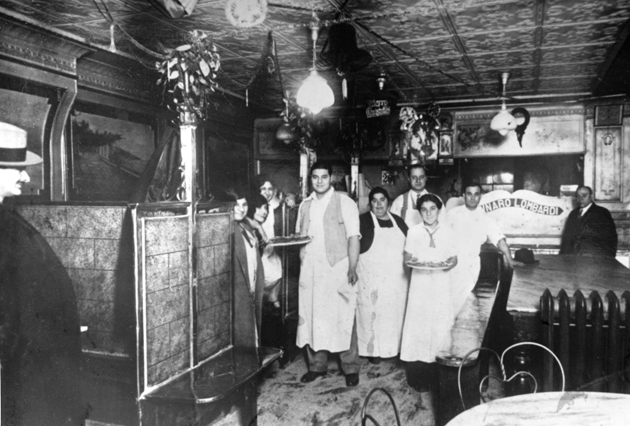

Wij hechten waarde aan kwaliteit. Dit proef je in de producten die wij aanbieden, herken je in de mensen die deze producten maken en zie je in de manier waarop wij omgaan met de planeet. Onze waarden veranderen niet, net als goede Pizza. Deze waarden ontstaan niet zomaar, bij Utrecht Pizza zitten deze waarden diepgeworteld. Shane's waarden zijn nog altijd zodanig diepgeworteld in ons merk, dat je kunt zien dat deze waarden tot leven komen in ons eten, onze mensen, onze service en onze restaurants. Daarom zullen wij ons uiterste best blijven doen om deze waarden te blijven realiseren: Always Original.
Bij Utrecht Pizza hebben we een passie voor eten. We zijn experts op het gebied van vers pizza’s en serveren ons Finger Lickin’ Good food met veel trots. Wij vinden kwaliteit ontzettend belangrijk en dat proef je in de producten die wij serveren. We serveren onze gerechten zoals je van ons mag verwachten: gemaakt met verse pizza’s van hoge kwaliteit, elke dag versbereid door onze gepassioneerde koks in onze eigen keukens. Alles wat we doen en maken, moet Utrecht Pizza-eigen zijn: Always Original
Onze gerechten zijn te bestellen in onze restaurants en uiteraard ook via de Drive en bezorging. Meteen vanaf het begin bracht onze oprichter shane van der Woude mensen samen aan één tafel. Iedereen moet zich welkom voelen en daarom maken wij van onze restaurants een vriendelijke en levendige plek waar je van onze versbereide kip kan genieten met vrienden en familie. De restaurants zijn van alle gemakken voorzien. Van tafelontwerp tot muziek: overal is over nagedacht.